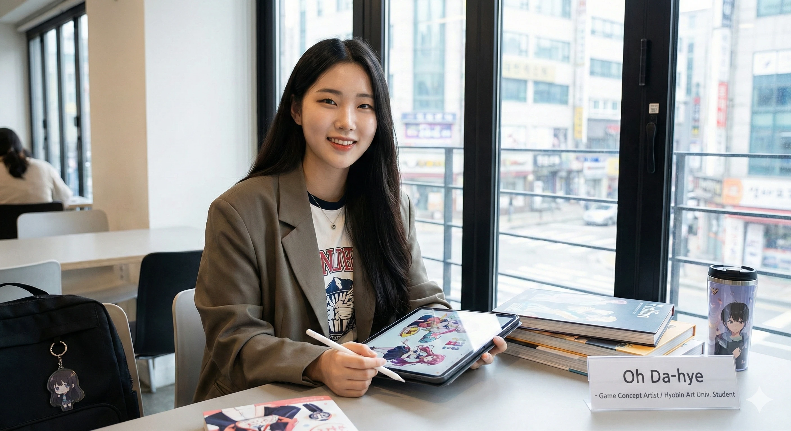

▲ HAF 행사장에서 코스프레 중인 모습| 이름 | 오다혜 (Oh Da-hye) |
|---|---|
| 출생 | 1997년 5월 12일 (29세) 효빈광역시 |
| 국적 | 대한민국 |
| 학력 | 효빈복지대학교 (미술치료학 / 학사) |
| 직업 | 미술치료사, 코스플레이어 |
| 가족 | 아버지 오다구 어머니 최영숙 오빠 오덕훈 (1990년생) 오빠 오덕진 (1993년생) |
| 별명 | 오타에 (Otae) 윤재훈 담당 일진 팩트폭격기 효빈시 비공식 사이다 덕후 화타 |
대한민국의 현직 미술치료사이자 코스플레이어.
효빈 서브컬처의 아버님이자 전 효빈도시공사 사장인 오다구 교수와 부녀자(Fujoshi)인 어머니 최영숙 여사 사이에서 막내딸로 태어났다. 일명 '성덕(성공한 덕후) 부부'의 완벽한 유전자를 물려받은 셈.
본업은 효빈복지대학교 미술치료학과를 졸업하고 활동 중인 훌륭한 미술치료사지만, 세간에는 과거 효빈시를 좀먹었던 윤대환 전 시장의 아들 윤재훈의 영혼까지 털어버린 전설적인 일화로 더 유명하다. 이 때문에 효빈 시민들과 네티즌들 사이에서는 '윤재훈 담당 일진', '비공식 사이다 감사관' 등으로 불린다.
부모님의 덕력을 고스란히 물려받았으며, 1990년대생답게 최신 서브컬처 트렌드에 빠삭하다. 특히 코스프레에 진심이며 서브컬처계에서 쓰는 닉네임은 '오타에(Otae)'이다. 이는 본인의 성씨인 '오'에 하나조노 타에(BanG Dream!)와 시무라 타에(은혼)의 이름을 합친 것이다.[1]
매년 8월 효빈시에서 열리는 HAF(효빈 애니 페스티벌)에 코스어 자격으로 매번 참여한다. 아버지가 HAF의 거물(?)이다 보니 행사장에서 아버지와 마주칠까 봐 필사적으로 변장을 하고 숨어 다닌다는 웃지 못할 사연이 있다. 하지만 오다구 교수도 벙거지를 쓰고 줄을 서 있기 때문에 서로 못 알아볼 확률이 높다
평소 성격은 활달하고 싹싹한 편이지만, 아버지 오다구 교수가 평생을 바친 캐릭터들과 효빈시의 문화를 모욕하는 자에게는 가차 없는 팩트 폭격기로 변신한다. 이는 아래 사건에서 극명하게 드러난다.
오다혜의 이름을 효빈시 전역에 알리게 된 희대의 사이다 사건. 아버지를 직위 해제하고 피규어를 박살 냈던 윤대환의 아들, 윤재훈과의 악연은 2대(代)에 걸친 피의 복수극(?)으로 이어졌다.
오다혜가 효빈복지대학교 재학 시절, 대학 연합 봉사 동아리에 가입해 활동하던 중이었다. 당시 동아리에는 고판대학교(원서만 넣으면 붙는 지잡대, 윤대환 부자의 모교, 2017년 폐교)에 재학 중이던 윤재훈이 소속되어 있었다.
문제는 윤재훈이 정식 부원도 아니면서 회장단이 느슨한 틈을 타 몰래 껴서 공짜 밥과 술을 얻어먹고 다니는 무전취식범이었다는 것이다. 그러면서 술자리만 가면 "우리 아빠가 전 시장이다", "곧 정계 복귀하신다"며 꼴불견 허세를 부렸다.
어느 날 회식 자리에서 오다혜가 '모에화 캐릭터 기획자' 오다구 전 사장의 딸이라는 것을 알게 된 윤재훈은 겁도 없이 시비를 걸었다.
이에 오다혜는 표정 하나 안 변하고 맥주잔을 내려놓으며 전설의 반격을 시작했다."야, 너네 아빠가 그 덕후 사장이라며? 회사에서 짤리고 집에서 인형 놀이나 한다며? ㅋㅋㅋ 쪽팔리지도 않냐?"
윤재훈이 벙쪄서 말을 더듬자, 그녀는 치명타를 꽂아 넣었다."우리 아빠가 오타쿠인 게 뭐 어때서? 덕질은 죄가 아니야. 하지만 횡령이랑 뇌물수수는 죄란다, 재훈아. 너네 아빠 지금 어디 계시니? 교도소 밥은 입에 맞으신대?"
이 한 마디에 윤재훈의 찌질한 실체가 만천하에 드러났고, 그는 쏟아지는 야유 속에 술집에서 쫓겨나 동아리에서 영구 제명당했다."그리고 너... 아까부터 계속 선배 행세하는데, 내가 총무 언니한테 확인해봤거든? 너 우리 동아리 정회원 명부에 이름 없더라? 지난달 회식비랑 이번 달 회비, 도합 15만 원은 언제 낼 거니? 무전취식도 유전인가 봐?"
이 사이다 일화는 알음알음 퍼져나가 현 효빈시장인 박효빈의 귀에까지 들어갔다. 이야기를 들은 박효빈 시장은 집무실에서 배를 잡고 뒹굴 정도로 폭소했다고 한다.
박 시장은 "역시 교수님의 따님답습니다! 그게 바로 정의구현이죠! 오다혜 씨를 우리 시 홍보대사나 감사관으로 특채해야 하는 거 아닙니까?"라며 쌍따봉을 날렸다. 2026년 현재까지도 박 시장은 사석에서 오다구 교수 부녀를 만날 때마다 "그때 그 '회비 미납' 발언은 역사에 남을 명언이다. 2022년 지방선거 토론회 때 내가 윤재훈한테 그 드립을 쳤어야 했다"며 두고두고 아쉬워(?)한다고.
윤재훈의 수난은 여기서 끝나지 않았다. 2022년 제8회 지방선거에서 9.99%로 선거비용을 전액 날리고 빚더미에 앉아 몰락한 윤재훈은 결국 그해 하반기 효빈시 굿즈 생산 공장에서 강제 노역(?)에 가까운 포장 알바를 하며 연명하고 있었다.
하필이면 본업이 미술치료사인 오다혜가 해당 공장의 근로자 심리 상담 프로그램 자원봉사를 나가게 되었고, 굿즈 상자를 포장하고 있던 윤재훈과 운명적으로 마주쳤다.
이 웃음 섞인 인사에 윤재훈은 수치심에 얼굴이 시뻘게져서 고개도 들지 못한 채 한바다 인형 눈만 푹푹 찌르고 있었다고 전해진다. 과거 아버지가 부수려 했던 바로 그 인형들을 아들이 직접 박스에 담아 포장하고, 그걸 파괴당할 뻔했던 효빈광역시의 딸이 위에서 내려다보는 완벽한 수미상관이자"어머, 안녕하세요? 선배님, 드디어 적성에 맞는 일을 찾으셨네요! 인형 포장 솜씨가 아주 예술이세요~ 우리 아빠가 만든 캐릭터 포장하느라 고생이 많으셔~"
2022년 공장 알바에서 3일 만에 쫓겨나고 감옥까지 다녀온 전과자 주제에, 2024년 비상계엄 사태 당시 장난감 총을 들고 '효빈지구 계엄사령관' 행세까지 하며 전국적인 비웃음거리가 된 윤재훈은, 2026년 6월 제9회 전국동시지방선거에 기어코 국민의힘 공천을 받아 효빈광역시장 후보로 재도전하는 대형 사고를 쳤다. 당시 국민의힘 당 대표였던 장동혁이 윤재훈의 맹목적이고 광신도적인 윤석열 전 대통령 숭배 성향을 높게 사서(?) 무리하게 낙하산 공천을 꽂아 넣었다는 것이 정설이다. (...)
어느 날, 윤재훈은 당가동 한복판에 유세차를 세우고 확성기를 든 채 "저 윤재훈! 밑바닥 공장 노동자로 일하며 서민의 땀과 눈물을 배웠습니다! 각하의 뜻을 받들어 윤석열 대통령님을 지키고 효빈시의 빨갱이 오타쿠들을 쓸어버리겠습니다!"라며 눈물겨운 감성팔이 코스프레를 시전하고 있었다.
그런데 하필 점심시간에 아이스 아메리카노를 빨며 그 앞을 지나가던 오다혜가 이 꼴을 목격하고 말았다. 그녀는 참지 않고 유세차 앞 군중들 사이를 뚫고 들어가 목청껏 사자후를 내질렀다.
이 한 마디에 유세장 분위기는 싸늘해졌고, 지나가던 시민들은 빵 터져서 배를 잡고 웃기 시작했다. 거짓말과 흑역사가 한 번에 들통난 윤재훈은 사색이 되어 마이크를 떨어뜨리고 유세차 뒤로 숨어버렸다."선배님!! 공장장님이 선배님 불량품만 오지게 내고 한바다 눈알 거꾸로 붙였다고 3일 만에 짤랐다던데 그새 정치판으로 도망치셨어요?! 저번에 당가동에서 장난감 총 들고 계엄사령관 놀이하다가 상인들한테 파리채로 쳐맞고 질질 짜셨다면서요?! 장동혁 대표님한테도 그렇게 사기 쳐서 공천받으셨어요?!"
오다구 일가답게 범상치 않은 가풍을 자랑한다.
2023년 HAF 행사장에서 있었던 희대의 해프닝. 오다혜는 이날 아버지가 직접 기획했던 고나미 1세대 레진 피규어 버전을 완벽하게 코스프레하고 행사장을 누비고 있었다.
마침 한정판 굿즈 대기열에 서 있던 변장 상태의 오다구 교수가 그 퀄리티에 감탄하며 다가가 "학생, 고나미 1세대 버전 고증이 아주 훌륭하구먼. 내가 기획자인데, 사진 한 장 찍어도 되겠나?"라고 정중히 요청했다. 아버지의 목소리를 단번에 알아챈 오다혜는 속으로 경악했으나, 정체를 들키지 않으려고 꾹 참고 캐릭터 포즈를 취해줬다.
그날 저녁, 집에 돌아온 오다구 교수는 아내에게 "오늘 행사장에서 역대급 고나미 코스어를 봤어! 옛날 생각나더라구."라며 낮에 찍은 사진을 자랑스레 내밀었다. 그 사진을 본 아내 최영숙 여사는 오다구의 등짝을 세게 후려치며 소리쳤다.
그제야 전말을 깨달은 오다구 교수는 크나큰 충격에 휩싸여 3일 동안 딸의 얼굴을 똑바로 쳐다보지 못했다고 한다."이 양반아, 이거 막내딸이잖아!!"
오다혜의 직업병은 상당히 특이한데, 처음 보는 사람의 옷 색깔이나 액세서리 배치만 보고도 무의식적으로 "이 사람은 무슨 애니메이션을 파고 있구나"를 프로파일링 해버리는 무서운 통찰력을 지녔다.
이런 특성 덕분에 미술치료사로서 그녀의 능력은 업계에서 전설로 통한다. 심한 대인기피증이나 우울증을 앓고 있는 청소년(주로 은둔형 외톨이 성향) 내담자가 오면, 그녀는 내담자가 끄적거린 그림의 눈매 묘사만 보고도 "너 쿄애니(교토 애니메이션) 작화 좋아하지? 최애가 누구니?"라고 정곡을 찔러 단번에 무장해제를 시켜버린다.
상담에 애니메이션 명대사와 세계관을 활용하거나, 심지어 '치료 도구로 건프라 조립하기', '애니메이션 성지순례 심리 지도 그리기' 같은 파격적인 미술치료 기법을 고안해 냈다. 초창기 시청 복지과에서는 "이게 무슨 치료냐"며 예산 삭감을 시도했으나, 완치율 99.9%라는 경이로운 통계를 내밀며 복지과 공무원들을 데데꿀하게 만들었다. 학부모들과 상담계에서는 그녀를 '덕후 치료계의 화타'라고 부른다.
현 효빈광역시 수장인 박효빈 시장은 윤재훈 참교육 사건 이후 오다혜를 격하게 아끼고 있다.
재미있는 점은 두 사람의 전공과 취향이 기가 막히게 겹친다는 것이다. 복지 행정과 사회 정책을 꿰고 있는 박효빈 시장과 복지대학교 출신의 미술치료사인 오다혜. 두 사람이 사석에서 만나면 효빈시의 청소년 복지 정책이나 BanG Dream!(뱅드림) 이벤트 보더컷 이야기를 하다가도, 이내 윤재훈의 심리 상태 분석으로 화제가 넘어가 열띤 토론을 벌이곤 한다.
오다혜가 치료사의 관점에서 "시장님, 그 선배가 그렸던 낙서들을 투사적 그림 검사 기법으로 분석해보면, 심각한 애정 결핍을 기반으로 한 뒤틀린 과대망상이 보입니다."라고 분석하면, 박 시장이 고개를 끄덕이며 "행정책임자로서는 그 친구를 당장 영구 격리해야 마땅하지만, 복지적 차원에서는 평생 공장에서 인형 눈알을 붙이는 노동 치료를 통해 자아를 수양하게 하는 게 맞겠군요."라며 진지하게 맞장구를 친다고 한다.
취향도 맞고 성격도 시원시원하다 보니 박 시장은 그녀에게 효빈시청 청년복지위원회 위원장이나 정계 입문을 꾸준히 꼬시고 있다. 하지만 오다혜는 "덕질이랑 코스프레 할 시간도 부족한데 정치는 무슨 정치입니까. 관종은 맞지만 진흙탕 정치판은 싫습니다."라며 단칼에 철벽을 치고 있다. 서로 굿즈는 교환하지만 일적인 제안은 가차 없이 까이는 기묘하고도 훈훈한 관계다.